山脉游览录（一）
山的记忆
每一座山都有独特的感觉，每一座山都有自己的故事。
我和踏过的每一座山都有一段故事。
我的山脉游览录，记录那些年那些山。
南五台
南五台位于西安南长安区境内约30公里的秦岭北麓，海拔1688米，为秦岭终南山中段的一个支脉。
因山上有清凉、文殊、舍身、灵应、观音五个台，也就是山上的五个小峰（即五个山峰），故名五台山；且与西安北部耀县的五台山（药王山）以南而得名。
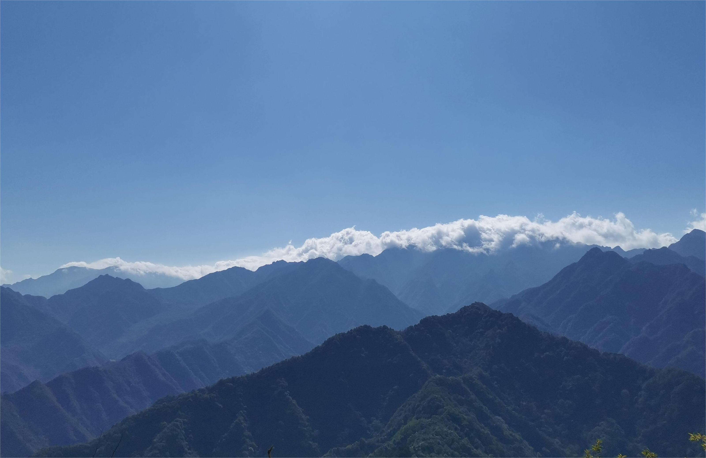
登山的体验感相当不错，较为轻松，当天也是蓝天白云，清风拂面，一切都很好。
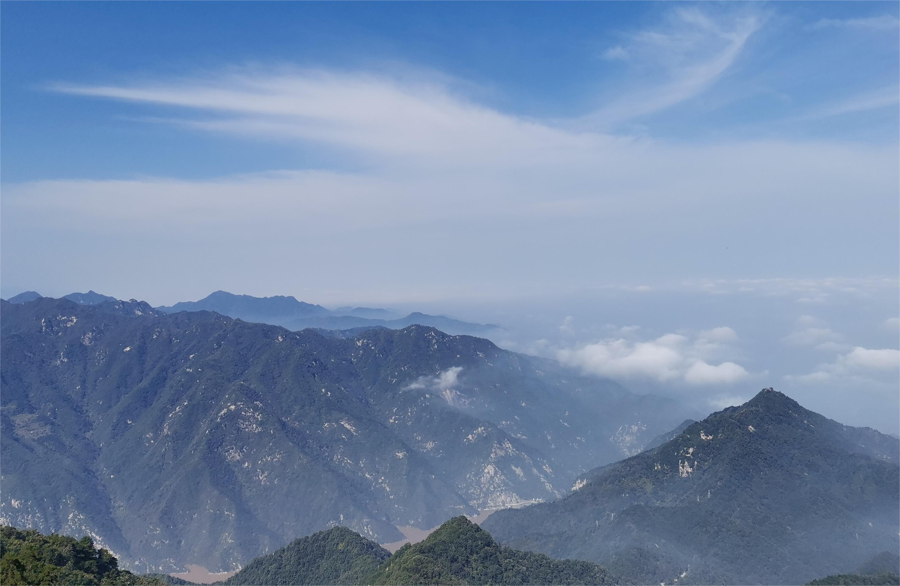
百二邱田
景区地处“生态公益林保护区”和“三坑水资源保护区”之间，背靠崎岭头，面对铁山峰，龙盘虎距，狮象朝拱，钟山鼓山对峙，巨石天然，石洞幽深；清泉涓涓，曲径幽幽，山松谷竹，桃红李素，四时山花烂漫，处处佳果硕累。
依稀记得这是一个清晨时的山顶：
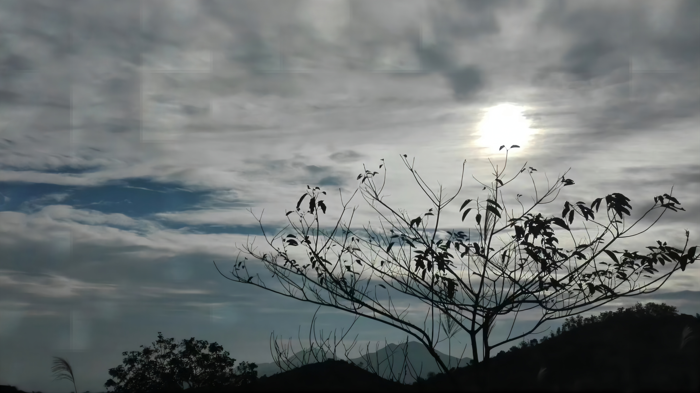
景区内的藏莲寺历史悠久，创建于明朝隆庆4年（公元1571年），距今已有430多年，建有慈悲娘殿、三圣殿、地藏阁、珍秀阁、半天娘殿、南天门伯公庙等宗教建筑。
白云密密麻麻的：
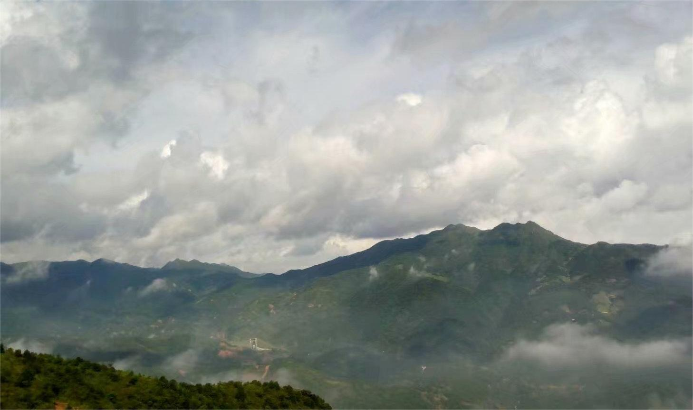
华山
华山，古称“西岳”，雅称“太华山”，为五岳之一，位于陕西省渭南市华阴市，在省会西安以东120千米处。南接秦岭山脉，北瞰黄渭，自古以来就有“奇险天下第一山”的说法。
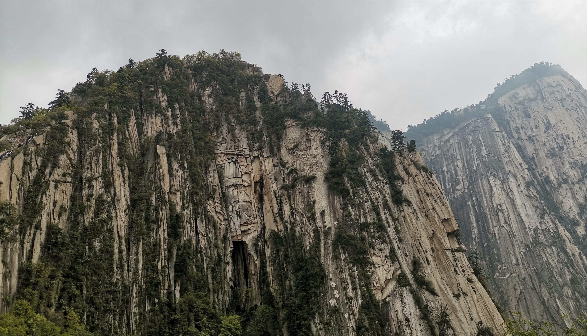
悬崖绝壁，崎岖嶙峋。
当时去的时候，天气不是很好，不是很好的登山时间。不过幸运的是我在山雨来临之前就下山了，赶上了一班缆车，之后不久缆车好像就停运了。
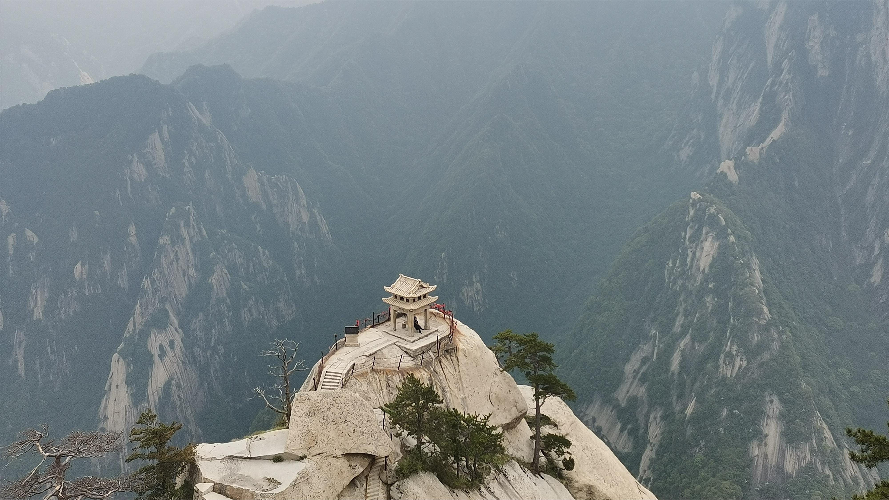
对弈亭，颇具仙外境之感。
铁山
铁山 ，又名铁尖山、铁嶂；清乾隆十年（公元1745年）《普宁县志》载：铁山，以崖石俱作铁色，故名”。
铁山属孤立山脉，东、西、南三面是练江流域平原，北面绵延与广太镇大坪山紧接，方圆62平方公里，是广东省普宁市中部平原地区的一座小山脉。
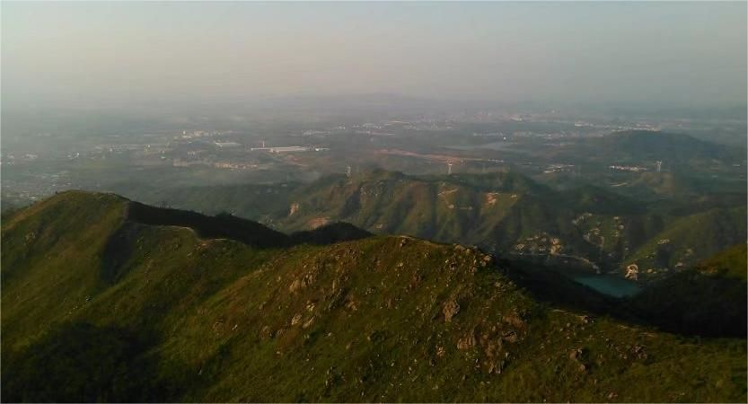
这是家乡的一座高山，记得当时好像在山上迷路了。
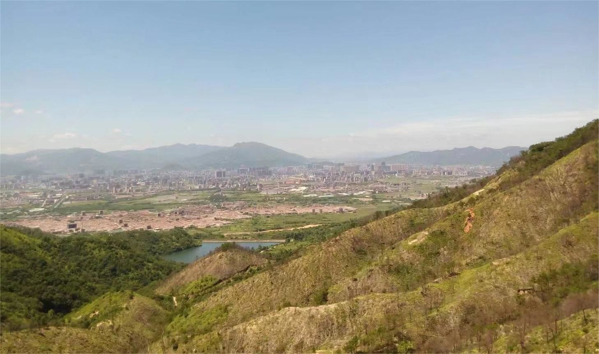
翠华山
翠华山，位于陕西省西安市长安区太乙宫镇，系终南山的一个支峰，位于秦岭北麓，距西安市区20千米，主峰终南山海拔2604米，总面积32平方千米。
因汉武帝曾在这里祭祀过太乙神，故又名太乙山。山腰有翠华庙，内供翠华姑娘塑像。民间传说翠华姑娘为争取自由婚姻，逃奔这里，后来成仙而去，此山便得名翠华山。
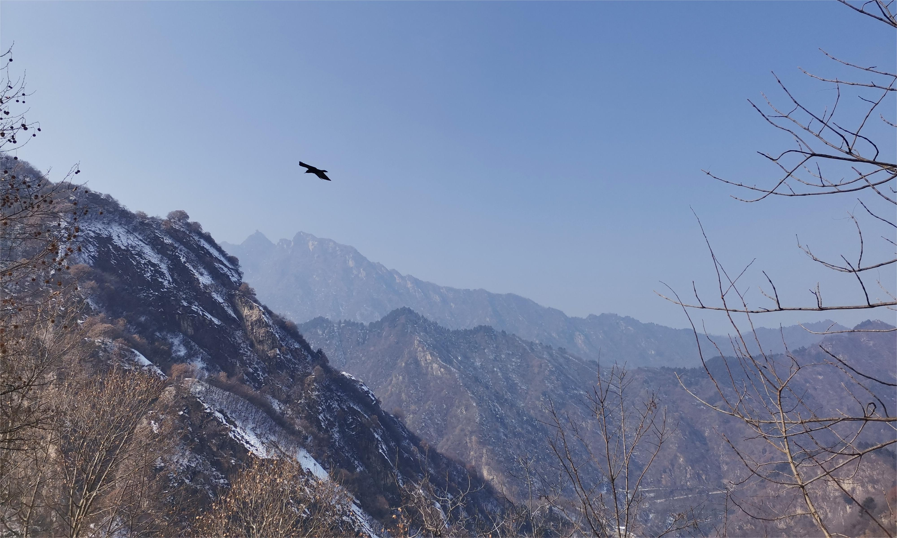
寒假时前去游览，这也是我第一次爬雪山。
一只孤独的鸟飞了过去。
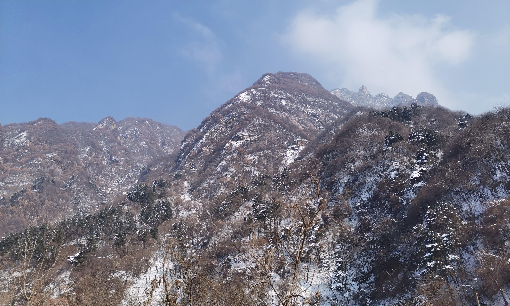
这是天池附近的山，优雅的池子和静谧的山。
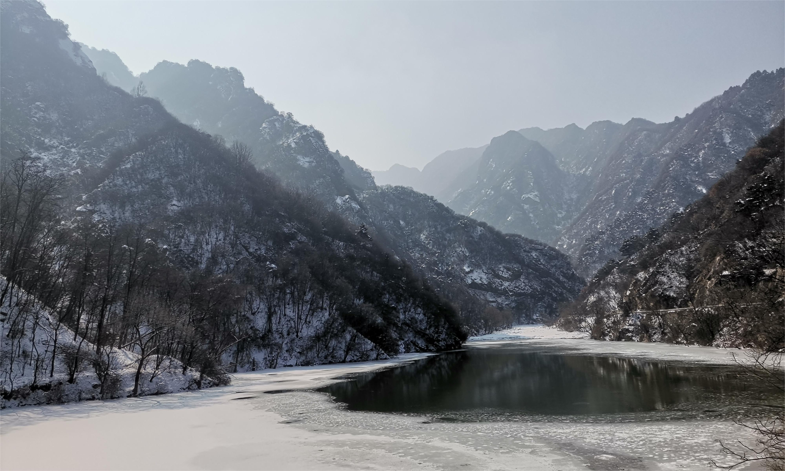